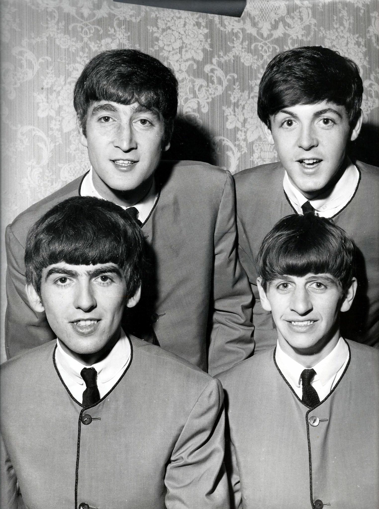

Please Please Me
Please Please Me adalah album pertama yang dirilis oleh The Beatles pada tahun 1963, oleh Parlophone Records, menyusul sukses yang diraih singel 'Love Me Do' (peringkat 17) dan 'Please Please Me' (peringkat 1) di tangga lagu Inggris.
Album ini dengan cepat membawa The Beatles menuju kepopuleran di Inggris. Dari 14 lagu yang terdapat pada album ini, delapan di antaranya diciptakan oleh John Lennon dan Paul McCartney. Pada tahun 2003, Rolling Stone lewat Daftar 500 Album Terbaik Sepanjang Masa menempatkan album ini di peringkat ke-39.

Daftar lagu
- I Saw Her Standing There
- Misery
- Anna
- Chains
- Boys
- Ask Me Why
- Please Please Me
- Love Me Do
- P.S. I Love You
- Baby It's You
- Do You Want to Know a Secret
- A Taste of Honey
- There's a Place
- Twist and Shout
Album Please Please Me adalah album yang paling cepat dikerjakan oleh The Beatles, yaitu hanya dalam satu hari pada hari Senin, 11 Februari 1963 di Abbey Road Studios. Lagu-lagu dalam album ini adalah repertoar lagu yang sering mereka nyanyikan di konser-konser mereka di The Cavern Club, Liverpool. Lagu "Twist and Shout", yang direkam terakhir kali, hanya direkam dua kali, dengan memakai versi Take 1, karena John Lennon, sang vokalis terkena flu.
Album selanjutnya ➡ Menu